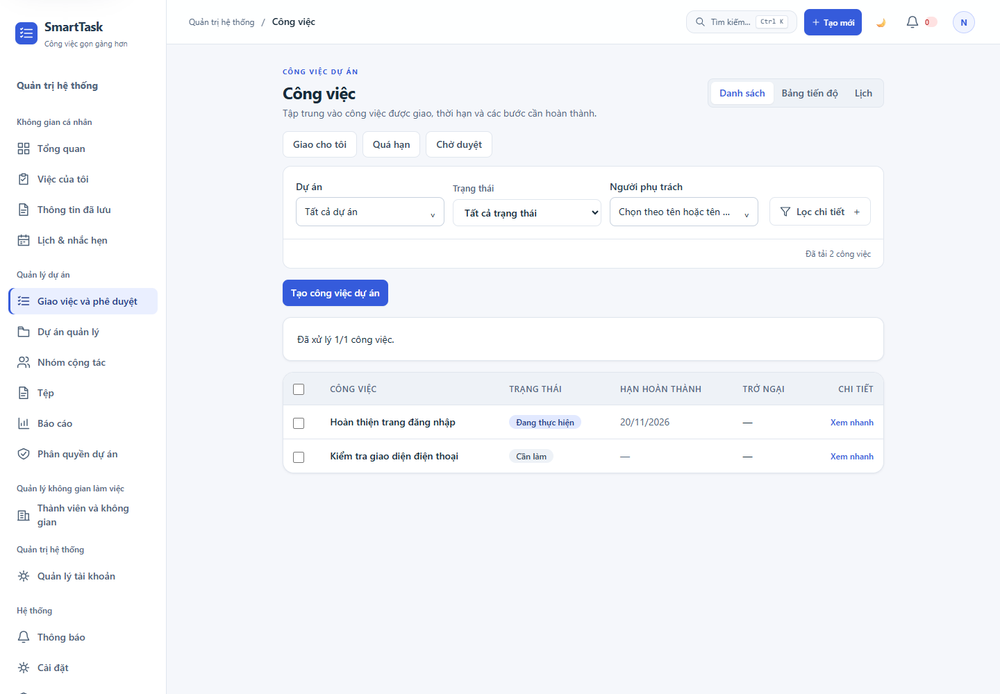
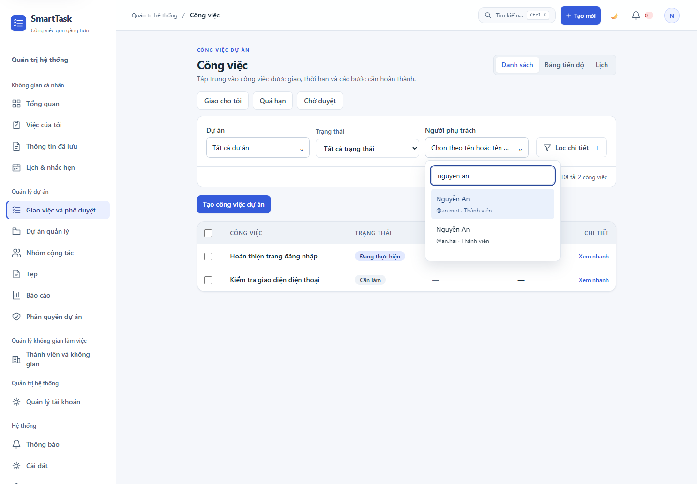
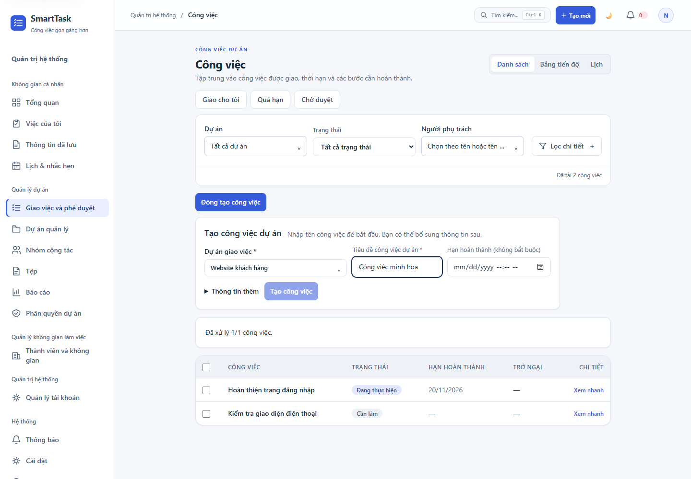
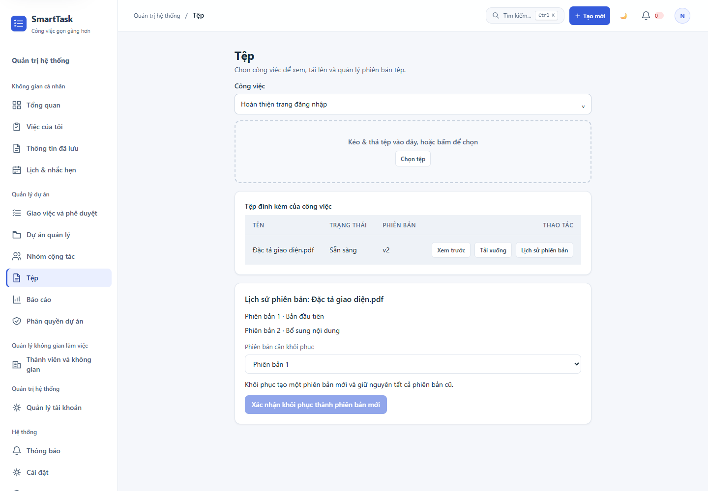
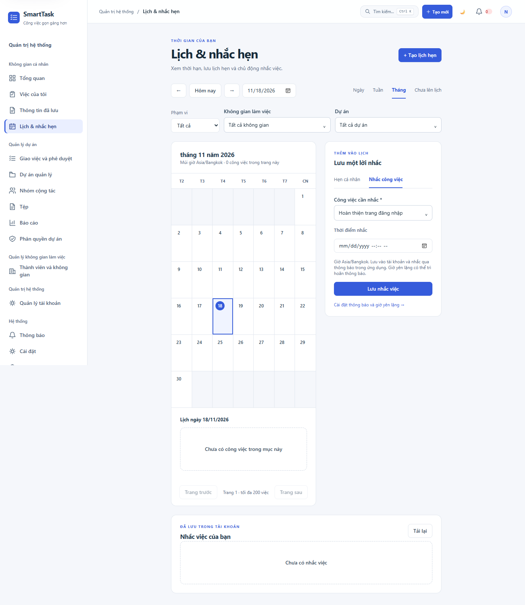
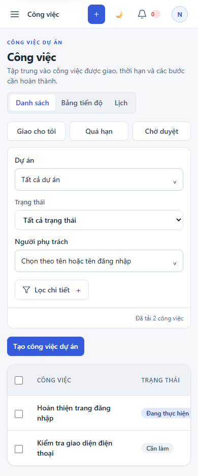

1. Quy trình sử dụng
- Chọn ngữ cảnh
Mở dự án hoặc công việc đang làm. Thông tin này được mang sang thao tác liên quan.
- Tìm đúng thông tin
Chọn theo tên. Dùng tên đăng nhập để phân biệt người trùng tên; tải thêm nếu còn trang sau.
- Thực hiện thao tác
Tạo việc, giao việc, đặt nhắc hoặc chọn phiên bản tệp. Chỉ hiện điều kiện nâng cao khi cần.
- Kiểm tra kết quả
Xem thông báo thành công hoặc lỗi cụ thể. Giao nhiều việc báo kết quả riêng từng việc.
Tìm và lọc công việc
Chọn Dự án → Trạng thái → Người phụ trách. Điều kiện ít dùng ở Lọc chi tiết. Các điều kiện đang áp dụng luôn có nút bỏ riêng; Xóa tất cả đưa bộ lọc về mặc định.
Tạo và giao việc
Tạo công việc dự án → chọn dự án nếu chưa có → nhập tên → đặt hạn nếu cần → mở Thông tin thêm để nhập mô tả/ưu tiên → tạo. Giao hàng loạt: chọn việc → Thêm người thực hiện → chọn người hợp lệ cho mọi việc → Áp dụng.
Tệp và lịch
Mở từ chi tiết công việc để giữ lựa chọn công việc. Trong Tệp: Lịch sử phiên bản → chọn phiên bản → Xác nhận khôi phục thành phiên bản mới. Trong Lịch: chọn thời điểm nhắc và lưu; hẹn cá nhân vẫn có luồng riêng.
Đọc báo cáo quy trình thực hiện chi tiết · Xem bản thiết kế trước khi sửa
2. Giao diện sau khi sửa
Chọn một màn hình để xem ảnh và thay đổi tương ứng. Có thể mở ảnh gốc để xem rõ.

Công việc: tập trung vào lựa chọn thường dùng
Ba lựa chọn chính: dự án, trạng thái và người phụ trách. Ưu tiên, nhãn, trở ngại, loại việc, thời hạn và sắp xếp nằm trong Lọc chi tiết.

Chọn người bằng tên
Gõ “nguyen an” vẫn tìm được “Nguyễn An”. Tên đăng nhập phân biệt người trùng tên. Mã nội bộ được gửi phía sau, không bắt người dùng nhập.

Tạo công việc: ít trường hơn lúc bắt đầu
Tên và dự án rõ ràng; hạn hoàn thành không bắt buộc. Mô tả và ưu tiên chỉ mở khi người dùng cần.

Khôi phục tệp theo lựa chọn có thật
Mỗi tệp có Lịch sử phiên bản. Chọn phiên bản nguồn rồi xác nhận; thao tác tạo phiên bản mới và giữ dữ liệu cũ.

Lịch và nhắc việc giữ ngữ cảnh
Mở Đặt nhắc việc từ chi tiết sẽ mang công việc sang Lịch. Danh sách có tìm kiếm, tải thêm và phân biệt việc cá nhân/dự án.

Điện thoại: bộ lọc theo một cột
Nhãn và vùng bấm rõ hơn. Trang và bộ chọn không tràn ngang; bảng công việc có vùng cuộn riêng.
3. Những nơi đã được thống nhất
| Nhóm màn hình | Thay đổi |
|---|---|
| Công việc và chi tiết | Lọc gọn, chọn người bằng tên, ưu tiên/trạng thái tiếng Việt, chọn việc phụ thuộc và liên kết sang Tệp/Lịch. |
| Dự án, không gian, nhóm, phân quyền | Chọn theo tên; tên thành viên và vai trò rõ nghĩa; giữ điều kiện phân quyền. |
| Lịch, tệp, ghi chú | Tìm lựa chọn, kế thừa ngữ cảnh; tệp có lịch sử thực từ API; ghi chú giữ quyền chỉnh sửa hiện có. |
| Báo cáo và trợ lý | Chọn dự án có tìm kiếm và tải thêm; chức năng/trạng thái của trợ lý có nhãn tiếng Việt. |
| Cài đặt, thông báo và hướng dẫn | Chuẩn hóa thuật ngữ, vai trò, ưu tiên, trạng thái và ngôn ngữ mặc định. |
4. Kết quả kiểm tra
| Kiểm tra | Kết quả | Phạm vi |
|---|---|---|
| Kiểu TypeScript, lint, bản dựng | Đều đạt | Toàn bộ mã giao diện. |
| Kiểm thử web | 72 đạt, 0 thất bại | Hồi quy cũ và các tình huống lựa chọn mới. |
| Kiểm thử backend | 24 đạt, không thất bại | Tên thành viên, quyền đọc tệp, ứng viên cộng tác, batch và đọc công việc. |
| Trình duyệt Edge | 7 nhóm đạt; không lỗi JavaScript | API giả lập; máy tính 1440 px và điện thoại 390 px. |
5. Bàn giao và giới hạn
Web mới cần triển khai cùng backend có tên thành viên, danh sách cộng tác và lịch sử phiên bản. Không đổi schema hoặc thêm thư viện. Nội dung người dùng tự nhập, tên sản phẩm và định dạng tệp được giữ nguyên.
Bằng chứng kiểm tra trình duyệt · Báo cáo chi tiết và hướng dẫn triển khai